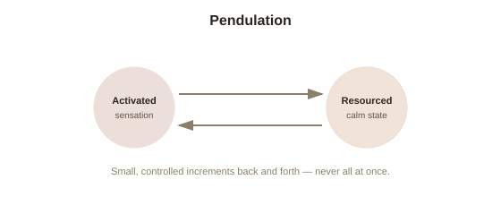

Chapter 4: EMDR and Somatic Therapies — What the Evidence Actually Says
Chapter 3 established, with real specificity, why trauma resists purely verbal processing: the prefrontal regions responsible for narrating experience go quiet exactly when a traumatic memory is activated. This chapter covers the treatments built specifically to work with that constraint — approaches that engage the nervous system directly, rather than relying primarily on talking it through — and takes an honest look at what the evidence actually supports for each.
EMDR: an unusual mechanism, a solid evidence base
Eye Movement Desensitization and Reprocessing (EMDR), developed by psychologist Francine Shapiro in the late 1980s, asks a person to briefly bring a traumatic memory to mind while simultaneously following a therapist's fingers back and forth with their eyes, or attending to another form of bilateral (side-to-side) stimulation. On its face, this sounds like an unlikely mechanism for treating trauma, and Shapiro's own original account of why it works has evolved considerably over time. What's kept EMDR firmly inside mainstream trauma treatment, despite the odd premise, is its clinical evidence base: multiple randomized controlled trials and meta-analyses have found EMDR produces PTSD symptom improvement comparable to trauma-focused cognitive behavioral therapy, and it's endorsed as an effective, evidence-based treatment by major bodies including the World Health Organization and the American Psychological Association. The leading working theory for its mechanism, called the Adaptive Information Processing model, proposes that the bilateral stimulation helps the brain access and reprocess a memory that got "stuck" in an unprocessed, sensory-fragmented form — closer to Chapter 3's picture of a hippocampus failing to properly timestamp the memory — allowing it to be re-filed as something that happened in the past rather than something still actively threatening.
Somatic Experiencing: working through the body's own interrupted response
Trauma researcher Peter Levine developed Somatic Experiencing from a striking observation: wild animals routinely experience life-threatening, high-adrenaline situations (a predator chase that narrowly fails) and, immediately afterward, visibly discharge the built-up activation — trembling, shaking, rapid breathing — before returning to calm, grazing behavior within minutes, apparently without lasting trauma. Levine's theory holds that humans have the same built-in discharge mechanism, but social and cultural conditioning (staying still, appearing composed, "pulling yourself together") frequently interrupts it, leaving the mobilized survival energy essentially trapped in the nervous system rather than completed and released. Somatic Experiencing works through titration (approaching traumatic material in small, carefully controlled increments, rather than all at once, to avoid overwhelming the nervous system back out of the window of tolerance) and pendulation (deliberately moving attention back and forth between a slightly activated, trauma-related body sensation and a calmer, more resourced one, building capacity gradually rather than confronting the material head-on) — both designed explicitly around Chapter 1's window of tolerance, working to expand it gradually rather than pushing straight through it.

Being honest about the comparative evidence
In the same spirit as Chapter 1's caveat, it's worth being direct about where the evidence for each approach actually stands relative to the others. Trauma-focused cognitive behavioral therapy and EMDR both have large bodies of randomized controlled trial evidence behind them and are the most consistently recommended first-line treatments in major clinical guidelines. Somatic Experiencing and similar body-based approaches have a smaller, growing evidence base — genuine positive findings exist, and the underlying rationale (working with a nervous system that reasoning has limited access to, as Chapters 2 and 3 established) is scientifically plausible, but the research base is not yet as large or as rigorously replicated as the two more established approaches. This doesn't mean somatic approaches don't work — for many people, clinically, they clearly help — it means the confidence level a careful reader should attach to "how well documented is this specifically" genuinely differs across these options, and it's worth choosing a treatment approach with that honest distinction in mind rather than assuming all trauma therapies rest on equally strong evidence.
The common thread across every approach here
Despite real differences in technique and evidence strength, every therapy covered in this chapter shares the same underlying strategy, directly following from Chapters 2 and 3's biology: none of them rely on insight or narrative alone to do the work. Each one is specifically structured to engage the nervous system's actual regulatory capacity — through bilateral stimulation, through titrated body awareness, through carefully paced exposure — precisely because Chapter 3's neuroscience shows that the parts of the brain doing verbal, narrative processing are the least available parts exactly when trauma is most active. Treatment that only talks past that constraint, rather than working with it directly, is treatment working with one hand tied behind its back.
Try this
Ideas for noticing or testing this in your own life.
- Try a small-scale version of pendulation: bring a mildly (not intensely) uncomfortable memory to mind, notice the body sensation it produces, then deliberately shift attention to something calming or neutral, and back again — noticing whether the intensity shifts with the movement.
- If you're researching trauma treatment for yourself or someone else, check the evidence base explicitly rather than assuming all listed options are equally well-studied — the distinction in this chapter is worth applying directly.
Worth pulling on?
A few loose threads from this chapter — if any of these genuinely grab you, that's a good sign of where to go next.
- None of this treatment picture would be complete without asking what recovery, or even growth, actually looks like on the other side of effective treatment. → The subject of the final chapter in this topic: post-traumatic growth, and the honest limits of that research too.
- The gap between a plausible mechanism and a large randomized evidence base is a recurring theme worth watching for across psychology generally. → Already in the library: Philosophy of Science's chapter on the replication crisis covers the broader version of exactly this caution.